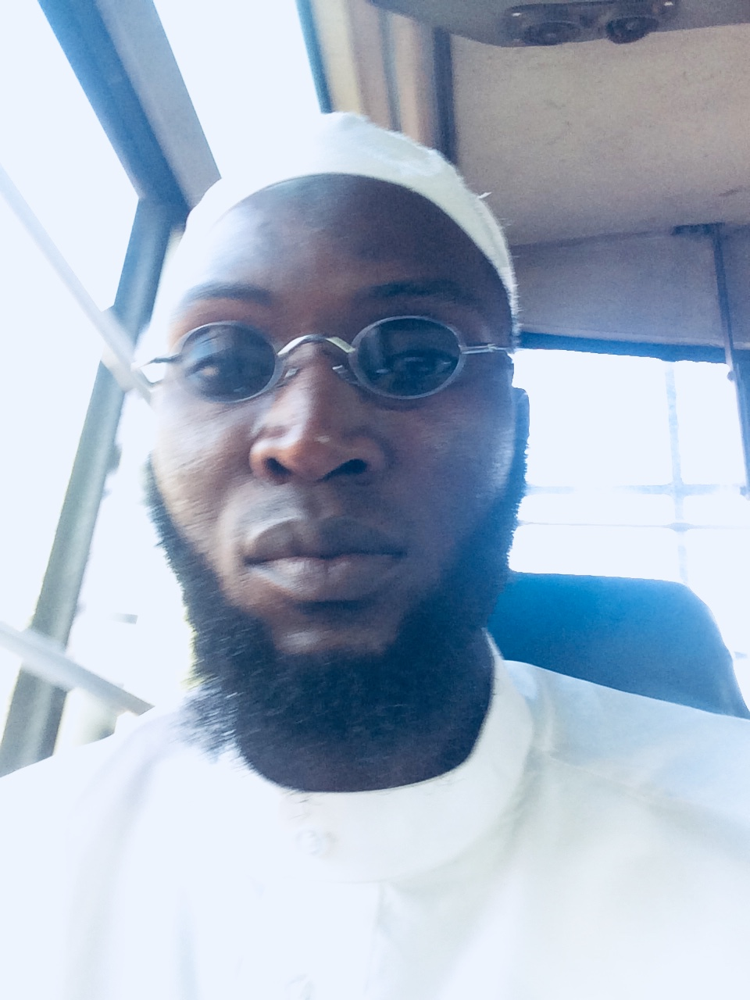
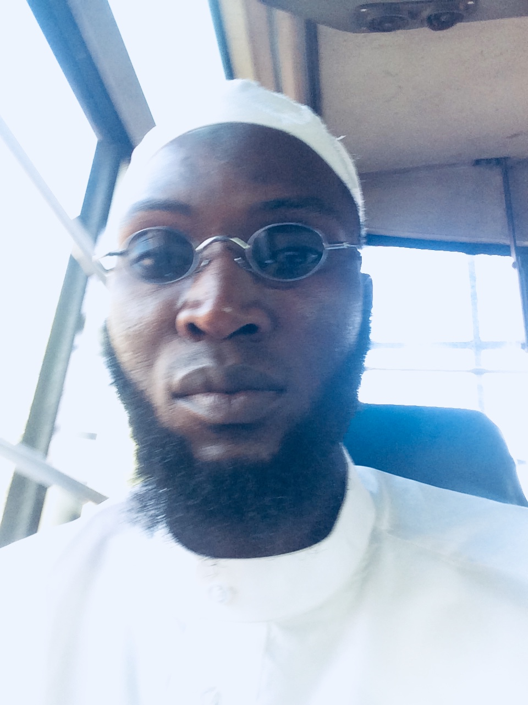
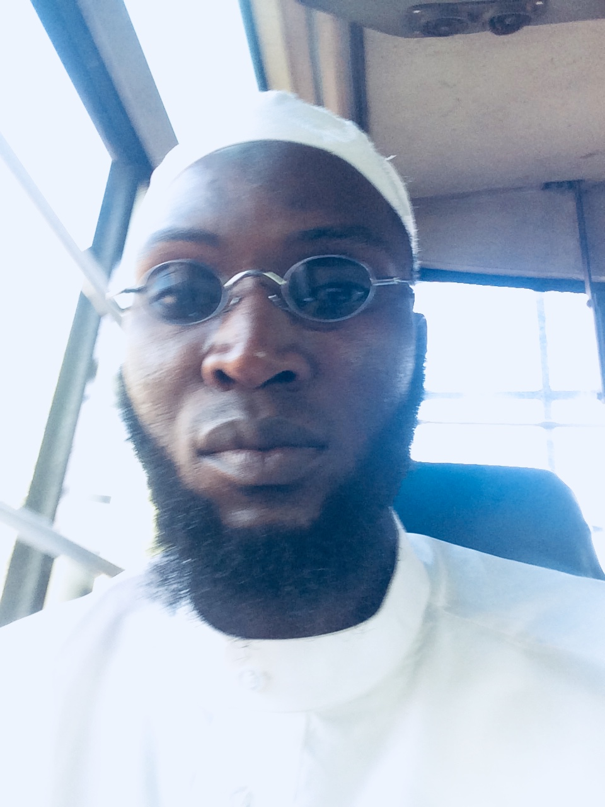

PRAIS BE TO ALLAH
THE QUESTIONING
People are going to be question on the Day of Judgement and the questioning will be different, Some people will be question in detail and some people will not be question at all (may Allah Subahanahu wa TaAllah make us among those not to be question). These are the best and are the once who reach to the pinnacles in Faith Jihad and Righteousness, they are not going to be question they will enter into Paradise without going through the questioning. All what will happend to them is that, they will be presented with their books of deeds but they will not be interrogated about the details in it, and these are 70,000 (seventy thousand) from this Ummah who will enter into Jannah without questioning. Then after that the more a person is questioned the more difficult and dengerous it is. Rasulullah (SAW) saids; "Whoever is interrogated, will be punished, because if you are interrogated that means there is something wrong. The questioning, the questions that will be asked are everything but there are some Ayat (verses) and Hadeeths that specified a few questions.
The most Question is: Al Kufr (disbelief). Why didn't you belive? Anyone who rejected the Truth this is the first question that will be asked, Allah Subahana wa Ta'ala says: And it shall be said to them, were are the Gods you worshipped? (26:92-93) then they will thrown head long into fire they and those straying in evil. There are four questions, very important question questions that every one will be asked about. Rasulullah (SAW) says: in the Hadeeth narrated by At Tirmidihi, "Your feet will not move from their spot on the Day of Judgement until you are asked four Questions
THE FIRST QUESTION
Your life, how did you use it? These years you spent in Dunyaa what did you do in them? Time, this Question is about time. This is the value of time and how did you use it? So this is why, i mean when we say that time is money, its even more worthy than that because time is your life! and whenever every second passing-by, it's been taking away part of you. The first Question will be about your life, how did you use your time in this Dunyaa? do you use it to serve ALLAH SWT or do you use it to disobey him?
THE SECOND QUESTION
How did you use the knowledge that you acquired? Did you practice it or did you just learned for the sake of learning and showing off, what have you done with it?So knowledge is an evidence against us if we do not use it. Also it is a grate sin not to practice the knowledge that you know. The Ayaa about the belivers Allah subuhanahu wataala said;"O you who belive why do you say what you don't do? it is a grate sin in the Eyes of Allah (SWT) to say what you dont do." So we have to practice what we preach.
THE THIRD QUESTION
Your wealth how did earned it and how he spent(disposed) it? and we are going to be ask two questions about wealth not one, how did you gaine it and how did you spend it (ligal or illagal)? We will be question about the source of every single dalasi that you gain and every single dalasi that you spend, why did you spent it this way? Therefore SUBHANNA LAA suffering in destution and porvrty for your whole life is better than suffering in tha Day of judgement for one Dallasi that was made from an illegal source. Is not worthy, you will rather live a life of porvety through out
the sixty or seventy years in this Dunyaa than the suffering for one Dollar from Haram or spent in Haram). To be question in the day of judgement is the most sevier thing. Rasullah (SAW) said "if you are questioned you will be punished" therefore we should be God concisouss of our Rizk (sustenance). How we gaine it and how we spend it). This shows one of the reasons why the Poor enter into Jannah before the Rich, even thus their could be a Rich man with better in the level and rank than a poor person, here we talking about the timing of entering in to Jannah. Rasullah (SAW) said "The Poor of the Muhajireen will enter in to Jannah five hundred years befor the Rich man reach. Why, because, and this is mension in a hadeeth "They will go to the Gates of Jannah and they whant to enter into Jannah and the Angels will ask them, how did you get here? Were 'nt you held accountable? They came early. These poor man of Muhajirin, they will say What are we going to be accountable for, we don't have any wealth and we were carrying our swords in the sake of Allah, we lived our lives in Jihad, we din't any money. What will Allah (SWT) ask us about?" Therefore wealth is questioning inthe Day of Judgement but also, there could be some of the rich like AbdRahman Ibn Auf who would have a high rank than many of the poor but Money is a very dengerous tool, it can be use to open doors of Jannah for you In fact Fisbilillah but can also take you to the extream other opposite and that is in the lower ranks of Hell fire. So it is a very dangerous tool and can take you to one of the two extreams, either a very high rank of rightousness or a very low rank of evil. So we have to give money the attention it derserves. We souldn't just have the attention of making money but we should have a lot of attention given to how to make and how we spend it. This are very two things, very important because two questions are in relation to the wealth and then filally.
THE FORTH QUESTION
Your body, how did you use it? Allah gave you this strength, you are not the inventor of your power (This is an abjection to the theory that says energy cannot be cerated or distroy). Allah gives it to you as a trust. Did you put your body to rest and not use it eventhough it was full of energy, optimize it to the extream and limit like the Sahaba RA(may Allah blessings be on them) did because it is a blessing from Allah Subhanahu Watall.
Also another Question the luxury of this life? Allah (SWT) says:"Then sall you be question that Day about the joy you endulged in."(102:8) Every blessing that Allah Subahana wa Ta'ala has given you in this Dunya, you will be asked on the Day of judgement about it. Where you greatful? Some of them for example Mujahid says:"You will be asked about every pleasure you had in this World, every moment of happiness and every moment of pleasure." Ibn Abbas says:"part of the pleasure of this World is a Healthy body, and you will be asked about it." We also know in the Hadeeth, Rasulullah(SAW) says:"There are two lessings Allah (SAW) has given people, and they are loosing becauseof them; that is spare time and health." These are two blessings from Allah SWT we need to use them ffor the sake of Allah SWT otherwise they are going to be against you on the Day of Judgement.
It is proven inthe Qur'aan and Sunnah that when a person dies, he will be called to account for every major and minor action he did in this world, wheather it was good or bad. He will be reworded for his good and punished for his bad deeds. The first stage of that reckoning is in the grave. In the grave the first thing a person will be asked will be: Who was your loaed? What is your religion? Who is this man who was sent among you?-as was narrated in the hadeeth of al-Baraa'ibn Aazib (may Allah be please with him), which was narrated by Abu Dawood in his Sunan (4753) and classed as saheeh by al-Albaani in Saheeh Abi Dawood, 2979.
Then on the day of Resurrection he will be brought to account for every major and minor action, even though he was already been brought to account for that in the grave. The first thing for which he will be brought to account for then will be his prayer.
(Narrated by Abu Dawood, 864; classed as saheeh by al-Albaani in Saheeh Abi Dawood, 770): It was narrated from Ibn Mas'ood (may the please and blessings of Allah be with him) said: "The son of Adam will not be dismissed from before his Lord on the Day of Resurrection until he has been question about five things:
his youth and how he used it?
learning how to code at Jcc

Covenants and promises
You will be asked about your covernants and also your promises, the most important covernant is the covenant of Iman. There is a covernant between us and Allah SWT, if you dont realise that you have signed a covernant with Allah, well you did. You have your signature when you say that you are a Muslim, that means you are signing on a contract between you and Allah SWT; When you say that you are a Mu'min (believer), this is not an empty word but means that you are giving your consent to abiding with a certain set of rules and Laws, and that is what Allah SWT has told us to do and refraining from what Allah (SWT) has made forbidden on us. Allah SWT says:"And fulfill every engagement for every engagement will be inquired into on the Day of Judgement."
Questions about Sight, Hearing and Mind
Especially these 3 (three) are very important because the sight and the hearing is where we input all of the Data into our mind. If you imagine your mind as the central processing unit of the body, how does it gain information and where does it get it from? It gets it from the eyes and the ears, by hearing and seeing. Therefore Allah SWT will question us specifically about these three because this is where all of the knowledge and information is garthered (eyes and ears) and then processed in the Mind. Therefore Allah SWT will asked us how did you use your eyes? Did you use it to read the Qur'an or did u use it to see what is forbidden? How did u use your eyea? Did u use it to listen to the remenberance of Allah SWT or you use it to the forbidden? How did u use your Mine? did u invest it for the sake of Allah SWT or did u use it for the sake of serving yourself in this Dunya and neglating Akira(life after death) because our Mine is what control us, and the way we use our Mine is the way our boby will function and that is what we will be held accountable for on the Day of Judgement. Therefore we need to make sure that we are using this three in the SUKUR of Allah SWT. Allah SWT says: "he is the one who cerated for you sight, hearing and Mind so that you maight be greatful" (may allah make us among the greatful). For every act of seeing, hearing or of feeling in the heart will be enquired in to on the Day of Judgement.
Finally
For the believer who believer in Allah SWT, The first question that will be saked is Sallat. Rasulullah (SAW) says:"The first thing you will be asked on the day of Judgement is Sallat." al Nisai. if it was completed it would be written down as completed. If there is a deficency in your sallat then Allah SWT will tell the angels to look at your book of records if you have any perform any voluntary prayers to complete the defrcency, this is what the naafil do, this is role of the Sunnah or naafil prayers. The five Daily prayers are mandetory and the have to be complete, and definetly here and there their is going to some deficency because of our shortcomings, how can that be completed? Its completed by the voluntary prayers that you offer. So the voluntary prayers patch any laps, deficences that exists in your five manditory prayers. Then Rasulullah SAW says:"and thesame wil be done to all of the other deeds, to your fasting if it is not Allah SWT will said look at his Farida if it is completed it will be written as complete if it is not Allah SWT will say look at his voluntary fasting."
It was also narrated from Abu Hurayrah in a similar variation that the prophet SAW said:"The first thing among their deeds for which the person will be brought to account on the Day of Resurrection will be prayer." Our Lord will say to his angels, although He knows best,"Look at My slave's prayer, is it complete or lacking? If it is complete, it will be recorded as complete, but if it is lacking, He will say:"Look and see whether my slave did any voluntary (naafil) prayers". If he had done voluntary prayers, He will say:"complete the obligatory prayers of My slave from his voluntary prayers". Then the rest of his deeds will be examined in a similar manner.